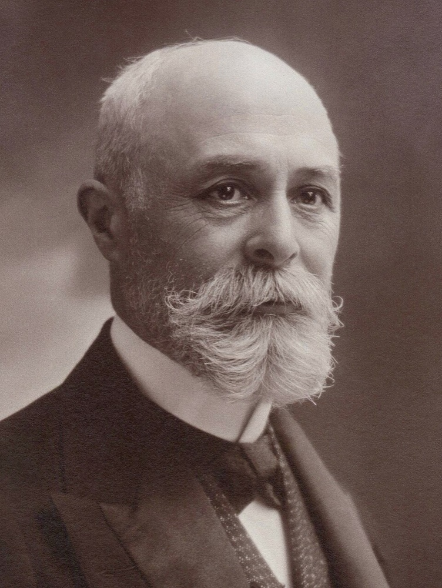
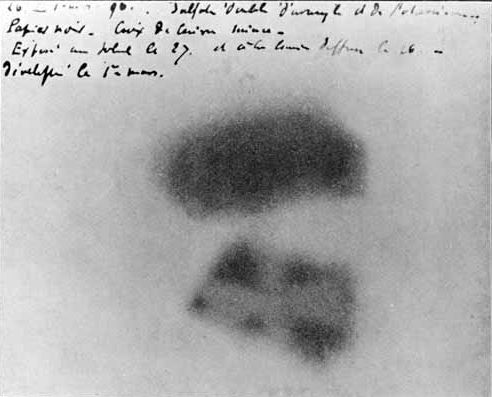

- X-rays had just been discovered. Becquerel thought sunlight made uranium salts give them out
- He left the salts on a wrapped photographic plate in a dark drawer
- The plate darkened anyway, with no sunlight
- The radiation came from the uranium itself. Nobel Prize with the Curies, 1903
Spontaneous: nothing was done to the uranium to make it happen.